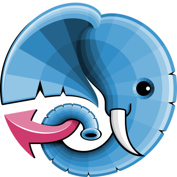

Promise
Promise
Deffered
What do we have?
| Library | Supports | Type | Stars | |
|---|---|---|---|---|
| ReactPHP | 5.3+ | Promise A | 7.9k | |
| amphp | 7.0+ | Coroutines | 3.1k |  |
| Swoole | 开发工 | Coroutine Fiber | 16.5k | |
| Workerman | 中文主 | PCNTL Ext | 9.1k |
Hello, JavaScript, my old friend...

Yield
Cooperative multitasking
| Database | Search Index | Cache | |||||||||||||||
|---|---|---|---|---|---|---|---|---|---|---|---|---|---|---|---|---|---|
Cooperative multitasking IRL
| Database | Search Index | Cache | |||||||||||||||
|---|---|---|---|---|---|---|---|---|---|---|---|---|---|---|---|---|---|
Cooperative multitasking. What if?
| Database | Search Index | Cache | |||||||||||||||
|---|---|---|---|---|---|---|---|---|---|---|---|---|---|---|---|---|---|
Cooperative multitasking. In Non-Blocking World
| Database | Search Index | Cache | ||||||
|---|---|---|---|---|---|---|---|---|
Handling request
-
Advantages:
- Simple error handling
- No memory leaks
-
Disadvantages:
- N+1 limit for workers
- Context switch overhead
Should I use it in prod? Probably not
Situation is under control.
Calm down, please.
Give me your attention for a moment.
I'll be glad to tell you what happened.
Bright nearest future
Where is the profit?
But I want something to play right now! Go for it


But why?

Success story #0
Badoo - Consume FacebookApi x20 faster
Success story #1
Mail.Ru - Billion pushes with Go
Success story #2
tutu.ru - Rebooking tickets
Success story #3
Story #4
| Image | Docker image | Size, Mb |
|---|---|---|
| Alpine + curl + jq | jb/curl | 10.1 |
| raw Go | jb-utils/go-notify | 5.21 | Alpine + Bash + Go | jb-utils/notify | 10.8 |
One more thing
Websockets in php
| Library | Stars | ||
|---|---|---|---|
| Ratchet | PSR-4 | 5.3k | |
| websocket-php | 0.5k | ||
| pusher-http-php | 3rd party | 1.1k | |
| phpdaemon | Is it still alive? | 1.5k | |
| Centrifugo | Language agnostic | 4.9k |